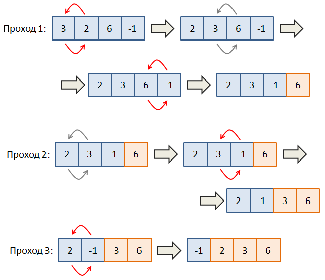

Большой подвиг 7. На вход программе подаются целые числа, записанные в одну строку через пробел. Необходимо их прочитать и сохранить в списке. Затем, выполнить сортировку полученного списка по возрастанию (неубыванию) методом всплывающего пузырька. Идея алгоритма проста и показана на рисунке ниже.

При первом проходе перебираем все соседние пары элементов и если значение предыдущего элемента (слева) больше значения следующего (справа), то они меняются местами. (На рисунке 3 и 2 меняются местами). Следующая пара - это 3 и 6. Они уже выстроены по возрастанию, поэтому ничего не делаем и переходим к следующей паре 6 и -1. Меняем значения местами и видим, что на последнем месте находится максимальное значение 6, что нам и нужно.
При втором проходе делаем все то же самое, но доходим до предпоследнего элемента, так как последнее значение 6 уже отсортировано. На третьем проходе исключаем уже последние два элемента и так далее. То есть, в этом алгоритме достаточно сделать N-1 проходов, где N - длина списка.
Вот идея алгоритма сортировки всплывающего пузырька. Реализуйте его для вводимого списка целых чисел.
Результат выведите на экран в виде последовательности чисел, записанных в одну строчку через пробел.
Тесты: https://github.com/selfedu-rus/test-python-base/tree/main/5/5.6.7
Sample Input:
4 5 2 0 6 3 -56 3 -1
Sample Output:
-56 -1 0 2 3 3 4 5 6